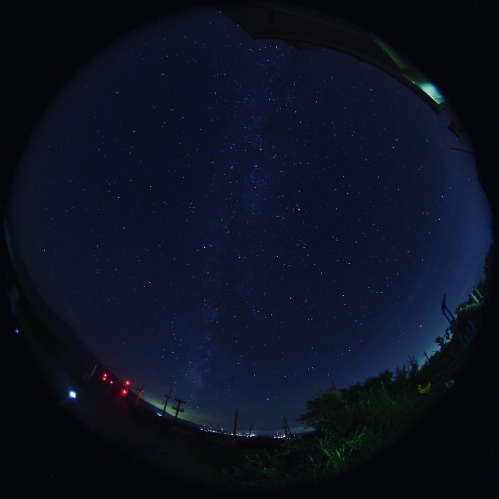

いちたろう
フロントエンドエンジニア見習いです
フロントエンドエンジニア見習いです
いちたろう
1988年4月21日 age32
おうし座
高卒→地元の企業に就職→結婚･妊娠を機に大手カメラメーカーのサポートセンターへ転職。
子供との時間を優先したいと思い、派遣会社を通して医療機器メーカーで勤務。（急なお休みなど融通が効く職場だったので）
毎日流れ作業をしている中で、このままで良いのかな？と思い始める。そんな時に、コロナが流行。主人の勧めで専業主婦に。
人生初の無職！しばらくはのんびり過ごし、家でできる仕事がしたいなあと思っていたところ、たまたま見ていたYoutubeで「webの神様｣をみてweb制作に興味を持つ。
2021/2～勉強開始！現在は書籍とドットインストールで勉強中。
目標は年内に月5万円稼げるようになること。
写真撮影 ／ 料理
このサイトの写真は全て自分で撮影。